Phase 1. JavaScript Deep Dive
Closures & Scope
Lexical Scope
Variable access depends on where code is written, not where it is called. JS walks up the scope chain at compile time.
const outer = () => {
const greeting = "Hello";
const inner = () => console.log(greeting);
inner(); // "Hello"
};
outer();
What is a Closure?
A function that remembers variables from where it was created, even after the outer function has returned.
const makeCounter = () => {
let count = 0;
return () => ++count;
};
const c = makeCounter();
c(); // 1
c(); // 2
Closure Traps in Loops
var shares one variable — all callbacks see the final value.
for (var i = 0; i < 3; i++) {
setTimeout(() => console.log(i), 100);
}
// ❌ 3 3 3
Fix: use let → new binding per iteration.
for (let i = 0; i < 3; i++) {
setTimeout(() => console.log(i), 100);
}
// ✅ 0 1 2
Real-World Uses
- Data privacy — module pattern
- Function factories —
multiplyBy(2)(5) - Debounce / throttle
- Event handlers remembering state
Common Pitfalls
- Closures keep the whole outer scope alive → memory leaks
- Always
removeEventListener/clearInterval - Inspect with DevTools → Sources → Scope panel
Event Loop
Call Stack
JavaScript does one thing at a time. The Call Stack is that "to-do list" — the function currently running sits on top, the ones waiting sit below.
function a() { b(); }
function b() { console.log("hi"); }
a();
// Stack: a → b → console.log → (done)
Web APIs + Callback Queue
setTimeout, fetch, click —
these are not JavaScript's job, they belong to the
browser. The browser runs them in the background
and, when done, drops the callback into a
queue.
Event Loop (the traffic police 🚦)
The Event Loop does exactly one thing: "Is the stack empty? Then take the next task from the queue."
console.log("1");
setTimeout(() => console.log("2"), 0);
console.log("3");
// Output: 1 3 2
setTimeout(0) does not mean 0ms — it means
"run me later". It waits for the stack to clear first.
Microtasks vs Macrotasks
Microtasks (Promise, queueMicrotask) —
high priority, the Event Loop finishes them first.
Macrotasks (setTimeout,
setInterval, I/O) — run afterwards.
console.log("1");
setTimeout(() => console.log("2"), 0); // macrotask
Promise.resolve().then(() => console.log("3")); // microtask
console.log("4");
// Output: 1 4 3 2
Error Handling
Catch errors with try / catch. For async code, use
try/catch with await, or attach
.catch() to the Promise.
// Sync
try {
JSON.parse("{ bad json }");
} catch (err) {
console.error("Parse fail:", err.message);
}
// Async
async function load() {
try {
const res = await fetch("/api");
const data = await res.json();
} catch (err) {
console.error("Fetch fail:", err);
}
}
Remember: try/catch only catches
errors from the same function. An error inside a
setTimeout callback will not bubble up to
the outer try/catch.
Promises & async/await
Why Promises?
A Promise is JavaScript's way of saying
"I don't have the value yet, but I will — or I'll fail trying."
It has three states: pending, fulfilled,
rejected.
const p = fetch("/api/user");
// pending → fulfilled (with data) OR rejected (with error)
Chaining
A Promise returns another Promise, so you can chain
.then() calls in a clean, readable way.
fetch("/api/user")
.then(res => res.json())
.then(user => fetch(`/api/posts/${user.id}`))
.then(res => res.json())
.then(posts => console.log(posts));
Each .then() receives the value returned by the
previous one. This is why chaining works — nothing blocks.
async / await
async/await is just syntactic sugar
over Promises. Same thing, but reads like normal code.
async function loadUser() {
const res = await fetch("/api/user");
const user = await res.json();
return user;
}
Rule: await can only be used inside
an async function. An async function
always returns a Promise — even if you return 5.
Error Handling
Use try / catch with await, or
.catch() at the end of a chain.
// async/await
async function load() {
try {
const res = await fetch("/api");
if (!res.ok) throw new Error("Bad response");
return await res.json();
} catch (err) {
console.error("Failed:", err.message);
} finally {
console.log("Done (success or fail)");
}
}
// .catch()
fetch("/api")
.then(r => r.json())
.catch(err => console.error(err));
Watch out: a rejected Promise that nobody catches triggers an UnhandledPromiseRejection and can crash the process in Node.
Promise.all
Run many Promises in parallel and wait for all to finish. Returns an array of results.
const [user, posts, comments] = await Promise.all([
fetch("/api/user").then(r => r.json()),
fetch("/api/posts").then(r => r.json()),
fetch("/api/comments").then(r => r.json()),
]);
Key point: if any Promise rejects,
Promise.all rejects immediately — even if others
succeed.
allSettled, race, any
Promise.allSettled— waits for all, never rejects, gives status of each.Promise.race— resolves/rejects with whichever finishes first.Promise.any— resolves with the first success, ignores failures.
const results = await Promise.allSettled([
fetch("/api/a"),
fetch("/api/b"),
]);
// [{ status: "fulfilled", value }, { status: "rejected", reason }]
Prototype Chain
Why Prototypes?
JavaScript doesn't use classes like Java does — under the hood
it uses prototypes. Every object has a hidden
link to another object called its prototype.
When you access a property, JS looks at the object first, then
walks up this chain until it finds it (or hits null).
Inheritance
Inheritance in JS means: one object can reuse properties and methods of another object through the prototype chain. No copying — just a link.
const animal = {
speak() { console.log(this.name + " makes a sound"); }
};
const dog = Object.create(animal);
dog.name = "Rex";
dog.speak(); // "Rex makes a sound"
// dog didn't define speak() — it inherited it
When you call dog.speak(), JS checks:
1. Does dog have speak? ❌
2. Does dog.__proto__ (which is animal)? ✅ → use it
__proto__ vs prototype
These two look similar but mean different things:
-
__proto__— the actual link on an instance pointing to its parent object. -
prototype— a property that lives on functions (used when the function is called withnew).
function User(name) {
this.name = name;
}
User.prototype.greet = function () {
console.log("Hi, " + this.name);
};
const u = new User("Yogesh");
u.greet(); // "Hi, Yogesh"
u.__proto__ === User.prototype; // true
Remember: __proto__ is the link.
prototype is the blueprint.
Object.create()
Object.create(proto) creates a new object whose
prototype is the object you pass in. Clean and direct —
no constructor needed.
const base = {
greet() { console.log("Hello!"); }
};
const child = Object.create(base);
child.greet(); // "Hello!" (inherited)
Object.getPrototypeOf(child) === base; // true
You can also pass a second argument to define properties:
const obj = Object.create(base, {
name: { value: "Yogesh", writable: false }
});
class is just sugar 🍬
The modern class syntax looks clean, but under the
hood it still uses prototypes.
class Animal {
speak() { console.log("sound"); }
}
class Dog extends Animal {}
const d = new Dog();
d.speak(); // "sound" (inherited via prototype chain)
extends = "link my prototype to that one".
That's it. No magic.
Common gotchas
-
Property shadowing: if the child defines the
same property, it hides the parent's. Use
super.method()to reach the parent. -
Shared arrays: don't put arrays/objects on
prototypeunless you want them shared by all instances. -
Never modify built-ins like
Array.prototype— you'll break other code. -
End of chain:
Object.prototype.__proto__isnull. Lookup stops there.
var / let / const
Hoisting
Hoisting means JavaScript moves declarations to the top of their scope before the code runs. So you can reference some things before they're written — but each keyword behaves differently.
console.log(a); // undefined
var a = 10;
console.log(b); // ❌ ReferenceError
let b = 20;
console.log(c); // ❌ ReferenceError
const c = 30;
var is hoisted and initialised with
undefined. let and const
are hoisted too, but they stay uninitialised until the
line where they're declared.
TDZ (Temporal Dead Zone)
The Temporal Dead Zone is the gap between the
start of a scope and the line where a let /
const variable is declared. Inside that gap, the
variable exists but you cannot touch it.
{
// ---- TDZ starts ----
console.log(x); // ❌ ReferenceError: Cannot access 'x' before initialization
let x = 5;
// ---- TDZ ends ----
console.log(x); // 5
}
Why it exists: it catches bugs. With
var you'd silently get undefined;
with let you get a loud error — much better.
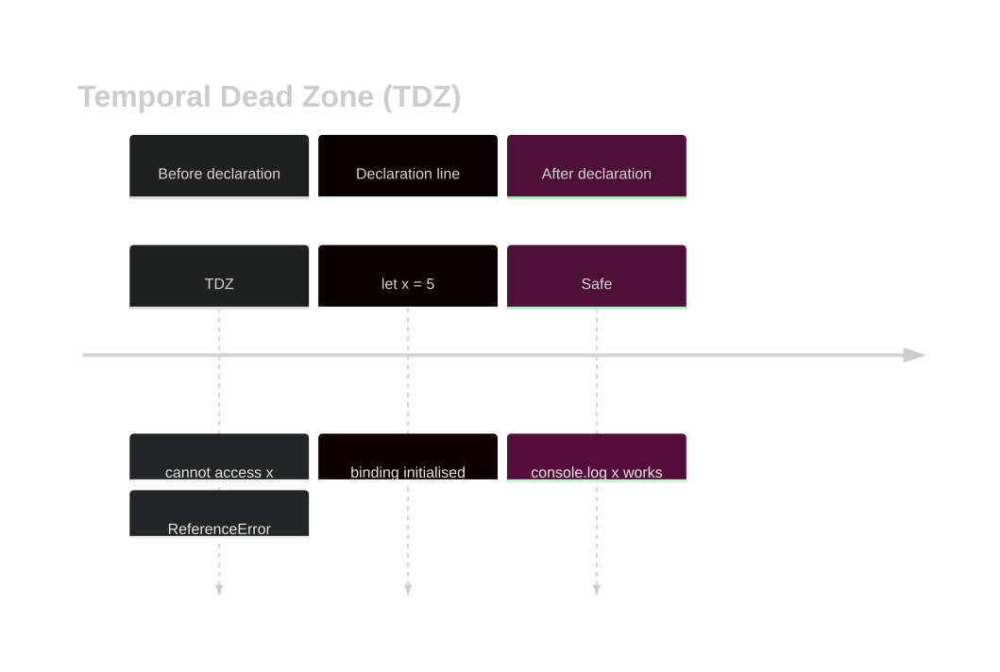
Block vs Function Scope
Function scope: var is visible
anywhere inside the function it's declared in.
Block scope: let and
const only live inside the { } they
were declared in.
function test() {
if (true) {
var a = 1; // function-scoped
let b = 2; // block-scoped
const c = 3; // block-scoped
}
console.log(a); // ✅ 1
console.log(b); // ❌ ReferenceError
console.log(c); // ❌ ReferenceError
}
var vs let vs const — quick table
| Feature | var |
let |
const |
|---|---|---|---|
| Scope | Function | Block | Block |
| Hoisted | Yes (undefined) | Yes (TDZ) | Yes (TDZ) |
| Reassign | ✅ | ✅ | ❌ |
| Redeclare in same scope | ✅ | ❌ | ❌ |
| Must initialise | ❌ | ❌ | ✅ |
const ≠ immutable
const means the binding can't change — but
the value inside can still be mutated if it's an object or array.
const user = { name: "Yogesh" };
user.name = "Yogi"; // ✅ allowed
user = {}; // ❌ TypeError
const nums = [1, 2, 3];
nums.push(4); // ✅ allowed
nums = []; // ❌ TypeError
Use Object.freeze() if you truly want it locked:
const config = Object.freeze({ theme: "dark" });
config.theme = "light"; // silently ignored (or throws in strict mode)
Best practice
- Prefer
constby default. - Use
letonly when you need to reassign. - Avoid
var— it leaks out of blocks and causes loop bugs. - Always initialise
constat declaration time.
The this Keyword
What is this?
this is a special keyword that points to
who is calling the function — not where it was
written. Its value is decided at call time, not at
definition time.
const user = {
name: "Yogesh",
greet() { console.log("Hi, " + this.name); }
};
user.greet(); // "Hi, Yogesh" → this = user
Golden rule: look at how the function is called — that tells you what this is.
Implicit Binding
When you call a method through an object
(obj.method()), this becomes that
object. That's implicit binding.
const car = {
brand: "Tesla",
show() { console.log(this.brand); }
};
car.show(); // "Tesla" → this = car
⚠️ Watch out: if you detach the method,
this is lost.
const fn = car.show;
fn(); // undefined → this = window (or undefined in strict)
Explicit Binding — call / apply / bind
You can force what this should be
using call, apply, or
bind.
function greet(greeting) {
console.log(greeting + ", " + this.name);
}
const user = { name: "Yogesh" };
greet.call(user, "Hello"); // "Hello, Yogesh"
greet.apply(user, ["Hi"]); // "Hi, Yogesh"
const bound = greet.bind(user); // returns a new function
bound("Hey"); // "Hey, Yogesh"
Diff: call takes args one by one,
apply takes an array, bind returns a
new bound function.
Arrow Functions
Arrow functions do not have their own this.
They inherit it from the surrounding (lexical) scope.
const user = {
name: "Yogesh",
greet: () => {
console.log(this.name); // ❌ undefined
},
greet2() {
const inner = () => console.log(this.name); // ✅
inner();
}
};
user.greet(); // undefined (this = outer scope, not user)
user.greet2(); // "Yogesh" (arrow grabbed this from greet2)
Rule of thumb:
use arrow functions for callbacks (map, filter, setTimeout),
but avoid them for object methods that need this.
Quick reference
| How it's called | this is |
|---|---|
obj.method() | obj |
fn() (plain call) | undefined (strict) / window |
fn.call(x) / .apply(x) / .bind(x) | x |
new Fn() | the newly created object |
| Arrow function | inherited from parent scope |
Deep Clone & Immutability
Shallow vs Deep copy
Shallow copy copies only the first level. Nested
objects/arrays are still shared between the original and
the copy.
Deep copy copies everything, all the way down —
no shared references.
const original = { user: { name: "Yogesh" } };
// Shallow
const shallow = { ...original };
shallow.user.name = "Yogi";
console.log(original.user.name); // "Yogi" ❌ shared!
// Deep
const deep = structuredClone(original);
deep.user.name = "Yogi";
console.log(original.user.name); // "Yogesh" ✅ safe
structuredClone()
The modern, built-in way to deep clone. Works in all modern browsers and Node 17+. One line, no library.
const clone = structuredClone(original);
Supports:
- Plain objects & arrays
- Date, RegExp, Map, Set, Blob, File
- Circular references (yes, really!)
- Typed arrays & ArrayBuffer
Does NOT support:
- Functions
- DOM nodes
- Class prototypes (result loses its class)
- Symbols, WeakMap, WeakSet
const obj = {
date: new Date(),
map: new Map([["a", 1]]),
arr: [1, 2, { x: 3 }],
};
const copy = structuredClone(obj);
copy.arr[2].x = 99;
console.log(obj.arr[2].x); // 3 ✅ original safe
Spread vs Deep copy
... (spread) and Object.assign() do
shallow copies. Fine for flat objects, dangerous
for nested ones.
// ✅ Safe — flat object
const a = { x: 1, y: 2 };
const b = { ...a };
// ❌ Dangerous — nested object
const c = { user: { name: "A" } };
const d = { ...c };
d.user.name = "B"; // c.user.name also becomes "B" 😱
Deep copy options compared:
| Method | Deep? | Notes |
|---|---|---|
{ ...obj } | ❌ | Shallow, fastest |
Object.assign({}, obj) | ❌ | Shallow |
JSON.parse(JSON.stringify(obj)) | ✅ | Loses Date, Map, Set, undefined |
structuredClone(obj) | ✅ | Built-in, handles most types |
_.cloneDeep(obj) | ✅ | Lodash, most flexible |
Immutability — why it matters
Immutability means: never mutate data in place. Always create a new version. This makes React re-renders, state comparisons, and debugging far easier.
// ❌ Mutating
state.user.name = "New";
setState(state); // React may not detect the change
// ✅ Immutable
setState({
...state,
user: { ...state.user, name: "New" }
});
React and Redux compare by reference
(prev !== next). If you mutate in place, the
reference stays the same — and React thinks nothing changed.
Object.freeze()
A shallow way to enforce immutability. It makes top-level properties read-only — but nested objects can still be mutated.
const config = Object.freeze({
theme: "dark",
nested: { color: "blue" }
});
config.theme = "light"; // ❌ silently ignored
config.nested.color = "red"; // ✅ still allowed! (shallow freeze)
// Deep freeze helper
function deepFreeze(obj) {
Object.values(obj).forEach(v => {
if (typeof v === "object" && v !== null) deepFreeze(v);
});
return Object.freeze(obj);
}
Quick rules
- Use
structuredClone()for deep copies — no library needed. - Use spread only for flat objects.
- Never mutate React state directly — always return a new object.
Object.freezeis shallow; deep-freeze manually if needed.- For class instances,
structuredCloneloses the prototype — use a customclone()method instead.
Currying & Composition
Functional Programming — the idea
Functional Programming (FP) treats functions as values — you can pass them around, return them, and combine them like Lego blocks. Two patterns you'll see everywhere: currying and composition.
Goal: write small, pure, reusable functions, then glue them together to build bigger behaviour.
Currying — one argument at a time
Currying turns a function that takes many arguments into a chain of functions that each take one.
// Normal
const add = (a, b, c) => a + b + c;
add(1, 2, 3); // 6
// Curried
const addC = a => b => c => a + b + c;
addC(1)(2)(3); // 6
Why bother? Because you can partially apply it and reuse the middle steps.
const add5 = addC(5);
add5(1)(2); // 8
add5(10)(20); // 35
Real-world currying
Currying shines when you need reusable, configurable functions.
1. Log with a prefix
const log = prefix => message => console.log(`[${prefix}] ${message}`);
const info = log("INFO");
const error = log("ERROR");
info("Server started"); // [INFO] Server started
error("DB connection lost");// [ERROR] DB connection lost
2. API with a base URL
const api = base => path => fetch(base + path).then(r => r.json());
const fetchUser = api("https://api.example.com");
fetchUser("/user/1");
fetchUser("/posts");
3. Validation
const min = n => value => value.length >= n;
const minPassword = min(8);
minPassword("secret"); // false
minPassword("supersecret"); // true
Generic curry helper
You don't have to write curried functions by hand — a helper can curry any function.
const curry = (fn) => {
return function curried(...args) {
if (args.length >= fn.length) return fn(...args);
return (...next) => curried(...args, ...next);
};
};
const add = curry((a, b, c) => a + b + c);
add(1)(2)(3); // 6
add(1, 2)(3); // 6
add(1)(2, 3); // 6
add(1, 2, 3); // 6
Composition — pipe data through functions
Composition means combining small functions so the output of one becomes the input of the next.
const compose = (...fns) => x => fns.reduceRight((v, f) => f(v), x);
const pipe = (...fns) => x => fns.reduce((v, f) => f(v), x);
compose— right-to-left (math style)pipe— left-to-right (easier to read)
const trim = str => str.trim();
const lower = str => str.toLowerCase();
const dash = str => str.replace(/\s+/g, "-");
const slug = pipe(trim, lower, dash);
slug(" Hello World "); // "hello-world"
Currying + Composition together
They pair beautifully — curry your helpers, then pipe them.
const map = fn => arr => arr.map(fn);
const filter = fn => arr => arr.filter(fn);
const reduce = (fn, init) => arr => arr.reduce(fn, init);
const double = x => x * 2;
const isEven = x => x % 2 === 0;
const sum = (a, b) => a + b;
const process = pipe(
filter(isEven),
map(double),
reduce(sum, 0)
);
process([1, 2, 3, 4, 5]); // (2+4)*2 = 12
When NOT to use it
- Deeply nested
a => b => c => ...hurts readability. - If a function is called only once, don't bother currying.
- Performance: currying creates closures — usually fine, but avoid in hot loops.
- Team unfamiliar with FP? A simple
functionbeats clever one-liners.